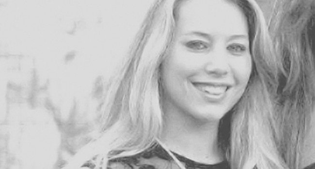

La comunidad de Global Shapers es una red de HUBs fundados y liderados por jóvenes que son excepcionales en sus logros y su interés de generar una contribución a sus comunidades.
2. ¿Como funciona?
El Hub (como llamamos a cada sede local) tiene plena autonomía para desarrollar proyectos que generen impacto positivo en nuestra ciudad. Los propios miembros desenvuelven y lideran proyectos, pudiendo contribuir directamente para la comunidad y, al mismo tiempo, desenvolviendo sus habilidades personales y su espíritu de liderazgo.
3. ¿Como participo?
Para ingresar a un Hub tenés que tener entre 20 y 30 años de edad y participar de un proceso de selección. Durante todo el año está abierta la postulación (ingresando a “Participá” en esta web). En la medida que se abran nuevos cupos cada una de las postulaciones serán cuidadosamente consideradas.
4. ¿Qué pasa si tengo más de 30 años?
Aunque este es un requisito de la estructura global para ser miembro Shapers, estás invitado a participar de nuestras actividades abiertas, seguirnos y colaborar en los proyectos que te interesen.
5. ¿Qué relación tenemos con el Foro Económico Mundial?
El Foro Económico Mundial es la organización que impulsa la comunidad, nos da soporte, posibilidad de participar en los encuentros globales y facilita la conexión en la comunidad. De todas maneras cada Hub define su propia estructura de gobierno, proyectos y formas de impacto local.
6. ¿Qué necesito para aplicar?
Tener entre 20 y 29 años al momento de la postulación.
Tener experiencia liderando y/o formando parte de iniciativas en el ámbito artístico, empresarial, académico, gubernamental o social.
Residir o estar habitualmente en la ciudad de Rosario o alrededores.
7. ¿Cuál es el compromiso que tomamos cada Shapers en Rosario?
Participar en las reuniones de Hub que se desarrollan cada 20 días y son de carácter estratégico y decisorio.
Participar activamente en los proyectos que impulsamos y desarrollamos cada año, aportando desde nuestra área de expertise.
8. ¿Qué necesito para aplicar?
Tener entre 20 y 29 años al momento de la postulación.
Tener experiencia liderando y/o formando parte de iniciativas en el ámbito artístico, empresarial, académico, gubernamental o social.
Residir o estar habitualmente en la ciudad de Rosario o alrededores.
9. ¿Recibimos alguna remuneración?
No, somos parte de una estructura sin fines de lucro y todos los miembros de cada Hub realizan su aporte sin remuneración. Nos moviliza el cambio y el impacto en la comunidad.
10. ¿Cómo se financian nuestros proyectos?
Para cada proyecto definimos una estrategia de financiación. No tenemos ataduras a ningún espacio.
¿Cuál es nuestra dinámica de trabajo?
Cada Hub es completamente horizontal. Para facilitar la articulación todos los años elegimos por votación un Curator y un Co-curator (o Incoming Curator) entre los Shapers del Hub. Nos reunimos una vez cada 20 días para definir líneas estratégicas y elementos centrales y después trabajamos por proyectos o células de trabajo vinculadas.
11. ¿Cómo es el proceso de selección?
Una vez cerrada la convocatoria, un comité de selección del Hub analiza cada uno de los perfiles y consensua una preselcción. Quienes queden preseleccionados, pasan a una entrevista relajada con uno de nuestros Shapers. Finalmente, se definen los nuevos Shapers.
12. ¿Cuántos miembros somos?
Actualmente somos 20 Shapers en Rosario. Cada Hub se va desarrollando por etapas y la idea es que tengamos un crecimiento consolidado. La mayoría de los Hub actuales poseen entre 15 y 30 miembros, dependiendo de cada ciudad del mundo.
13. ¿Por qué nos interesó ser parte?
Porque nos permite generar impacto positivo en la ciudad.
Porque nos conecta con jóvenes inspiradores y hacedores de todo el mundo.
Porque nos vincula en una comunidad local con otros jóvenes que buscan lo mismo.
Porque nos ofrece la posibilidad de participar en eventos globales del WEF y GSC.
Porque impacta en nuestro desarrollo personal y profesional.
Contactanos
Si tenes una idea para mejorar la ciudad de Rosario y te gustaría colaborar con nosotros, contactanos.
Qurva es un programa de aceleración para proyectos y organizaciones que trabajan por un impacto social positivo.
¿En qué consiste el proceso de aceleración?
La aceleración consta de 6 etapas de trabajo, las cuales se desarrollará en un periodo inicial de 6 meses. Durante este proceso un equipo interdisciplinario trabajará en forma conjunta con la organización/proyecto. La primera aceleración iniciará en el mes de Febrero de 2018.
Cuáles son los beneficios de ser acelerado en Qurva?
El programa ofrece la posibilidad de:
Participar de un programa de asesoramiento durante un periodo sostenido.
Contar con un diagnóstico interno de la organización.
Trabajar en forma conjunta para proyectar y definir metas y sueños comunes.
Profesionalizar y escalar el impacto de tu organización.
Desarrollar junto a un equipo interdisciplinario de profesionales planes de acción para mejorar y facilitar el trabajo que ya realizan.
Acompañar la implementación de los planes de acción.
¿En qué áreas se realiza el proceso de aceleración?
Desde Qurva se pueden acelerar las siguientes áreas de tu proyecto/organización, en función de un mapa de transformación previamente acordado:
Planeamiento Estratégico: definir correctamente el propósito nos ayuda a pensar la organización facilitando la formulación de su estrategia. Para ello deberán definirse los recursos, capacidades y habilidades necesarios y disponibles para su implementación.
Gestión: brindar el soporte administrativo para que la organización pueda desarrollar su estrategia correctamente. También se consideran aspectos vinculados a la institucionalización como persona jurídica.
Medición de Impacto: establecimiento de indicadores y monitoreo y de la transformación social.
Fundraising: desarrollar estrategias de captación de recursos para financiar las actividades.
Gestión del Talento: el desarrollo de las personas resulta clave en una organización para que ésta pueda cumplir con su propósito.
Comunicación: en un mundo cada vez más interconectado, ayudamos a diseñar una estrategia comunicacional efectiva, alineada con los recursos disponibles y aprovechando las últimas tecnologías.
Finanzas: gestión de fondos para el funcionamiento de la organización. Brindamos herramientas de presupuestación y evaluación de los mismos.
Networking: ofrecemos la red de contactos de los miembros de la comunidad Global Shapers para potenciar y desarrollar relaciones de largo plazo con los proyectos y OSC participantes.
¿Quiénes pueden aplicar para ser aceleradas?
¿Cualquier organización, proyecto, ONG o emprendimiento que cumpla con los siguientes requisitos mínimos:
Tener un fuerte espíritu de impacto social positivo (no excluye a proyectos o cooperativas con fines de lucro).
Ya tener implementación y haber realizado acciones concretas.
Sostener valores de diversidad y tolerancia.
Comprometerse a participar del programa de aceleración en caso de ser seleccionados.
¿Mi organización puede aplicar si no tiene personería jurídica?
Sí, no es requisito excluyente tener personería jurídica.
¿Si mi proyecto/organización tiene fines de lucro, puede aplicar?
Sí, sean con o sin fines de lucro, pueden aplicar. Sí es excluyente que demuestre un claro compromiso social.
¿Cómo es el proceso de aplicación y selección?
Todas las aplicaciones serán tenidas en cuenta y serán evaluadas por un jurado interdisciplinario. A partir del análisis de las organizaciones, se realizará una lista de prioridad de modo que en la medida que se vayan iniciando nuevas aceleraciones, se sumen más proyectos u organizaciones al proceso de aceleración. Esta lista tendrá validez hasta una nueva convocatoria abierta.
¿Tiene algún costo el proceso de aceleración?
No, ser acelerado dentro de Qurva no tiene ningún costo para la organización.
¿Qué compromiso exige participar en Qurva?
Todas las organizaciones seleccionadas firmarán una carta compromiso. Sus compromisos son:
Compromiso de la dirección/coordinación con el proceso de aceleración.
Participar del proceso de aceleración durante el periodo mínimo de 6 meses.
Equipo dispuesto a participar en reuniones con el equipo de Qurva con una frecuencia de 15 días en promedio.
¿Hasta cuándo puedo aplicar?
La aplicación está abierta hasta el Sábado 6 de Enero de 2018.
¿Cuándo se sabrán los resultados?
A partir de la segunda quincena de Enero serán informadas las instituciones.
¿Cuáles son los criterios de ponderación?
Sostenibilidad: las actividades propuestas muestran posibilidad de ser sostenidas en el tiempo.
Incidencia e impacto: el proyecto genera incidencia e impacto positivo en la comunidad.
Género y diversidad: la propuesta incluye perspectiva de género y diversidad en su formulación y en la integración del grupo que la promueve.
Consistencia del proyecto y visión: la propuesta debe ser clara, poseer objetivos y actividades acorde a lo que se quiere realizar.
Equipo: la propuesta cuenta con integrantes comprometidos.
¿Qurva tiene fines de lucro?
No, el proyecto es sin fines de lucro y los organizadores realizan su trabajo en forma voluntaria.
Es un espacio de encuentro, construcción y formación para organizaciones sociales
que trabajan con jóvenes. A través de metodologías basadas en recreación y educación no formal apuntadas a
la integración grupal y el desarrollo del individuo.
Se realizan reuniones cada 2 meses de educación no formal. Se dispone de un lugar fijo para los encuentros en
la “Esquina SF” (Oroño y Santa Fe, Rosario) y existe la posibilidad de realizar visitas a las ONGs
participantes. Cada encuentro se divide en dos ejes: FORMACIÓN y CONSTRUCCIÓN.
Carla Chernomordik
"Me llamo Carla y soy rosarina de nacimiento y por elección. Estudio Relaciones Internacionales y trabajo en ámbitos educativos formales y no formales. Desde mi infancia participo en una Organización Juvenil Educativa que forma líderes y promueve el desarrollo sustentable. Sueño con contribuir, a través de la educación, a la construcción de la paz y a una mejor convivencia, bajo la idea central de que el conocimiento mutuo reduce los prejuicios y abre posibilidades de mayor entendimiento."
Clara Inés Antonio
"Estudiante de Relaciones Internacionales, apasionada por la cooperación internacional e inspirada por la consigna “soluciones locales a problemas globales”. Realizó intercambios estudiantiles en Alemania, Líbano y Australia, becada por distintas organizaciones del sector privado y público. Miembro de la Red Argentina de Jóvenes por el Servicio Público, embajadora y editora del blog del South American Business Forum. Voluntaria de distintas organizaciones de la sociedad civil. Actualmente es directora ejecutiva del Programa Escalar, una organización privada sin fines de lucro, que busca promover oportunidades educativas para jóvenes en situación de vulnerabilidad social.".
Cristian Bergmann
"Soy Consultor de Empresas y Docente Universitario, especialista en Marketing, Estrategia y Management.Estudié Administración de Empresas en la Facultad de Ciencias Económicas y Estadística de la UNR.
Brindo asesoramiento a empresas Pyme de la ciudad de Rosario, principalmente de los rubros comercial, construcción y gastronomía. Desde el 2013, soy Director Ejecutivo de la Cámara de Estaciones de Servicio, Garages y Afines de Rosario. Colaboré en el desarrollo del Plan Estratégico de la Institución y la creación de la Comisión de Jóvenes Empresarios. En el 2012, comencé mis actividades como miembro del equipo de gestión del Programa de Fortalecimiento de Centros Comerciales Abiertos, en la Secretaría de Producción y Desarrollo Local de la Municipalidad de Rosario. En el 2009 fui Co-Creador y Coordinador del Programa Incubadora Universitaria de Empresas, en la Facultad de Ciencias Económicas y Estadística de la UNR"
Florencia Schiavoni
"Florencia en pocas palabras: Vengo de Puerto Esperanza, un pequeño pueblo al Norte de Misiones. Tengo una hermosa familia, que veo poco pero adoro con el ♥. Hace 9 años me vine a estudiar Licenciatura en Economía a Rosario. La vida me ha llevado a trabajar hace años en el mundo corporativo pero en verdad, soy una apasionada de la Economía Social y mi sueño es trabajar para construir una Economía mas humana, justa e inclusiva. Me encanta ayudar y por eso soy parte de varios proyectos sociales. Me gusta la frase: "Vocación es hacer algo, porque ese "algo" le da sentido a tu vida"
Gastón Sola
"Gastón tiene 25 años, 1000 preguntas y algunas respuestas. Cree que el cambio social comienza por uno mismo. Gastón trabaja como Coordinador en El Desafio Foundation, estudia Lic. en Logística en la U.N.R. y participa en diferentes espacios del entramado emprendedor argentino. Disfruta de salir a trotar, hacer acrobacias y andar en bicicleta. Es miembro de la Red Joven de Ashoka y de la red para el Servicio Público REDAR, alumni del Programa Amartya Sen y Embajador del South American Business Forum."
Geronimo Fisch
"Soy Gerónimo, o Gero, depende del enojo de quien me llame. Tengo 23 años y soy correntino de nacimiento pero rosarino por adopción. 6 hermanos irremplazables y 2 padres excepcionales forman mi máximo regalo! A los 9 años tuve un curso acelerado de optimismo y entusiasmo, ganándole a la leucemia una definición por penales. Hasta ahora tengo ese título! El otro, el de abogado, está en curso. No se con certeza a que me voy a dedicar, sólo se que no voy a ser apático. Consejero Estudiantil de mi Facultad por segundo año consecutivo."
Gisel Levit
"Arquitecta, Universidad Nacional de Rosario (U.N.R.). Cursando Maestría en Planificación y Gestión de Ciudades, Universidad de Buenos Aires (U.B.A.). Docente en Cátedra de Urbanismo y materia electiva "Diseño Cívico e Innovación Urbana", Facultad de Arquitectura (U.N.R.) Fundadora y directora de "Gregaria", agencia de innovación urbana y ciudadana de Rosario. Miembro de "Gabinete Joven" de la Provincia de Santa Fe, Argentina. Equipo de evaluación de Políticas Públicas desde el enfoque de Derechos Humanos de la Defensoría del Pueblo y Universidad Nacional de Rosario, responsable del Área Vivienda, Servicios Y Hábitat. Anteriormente trabajó en Metropolitana, Unidad de Planificación Estratégica y Gestión de la Municipalidad de Rosario y municipios del Ente de Coordinación Metropolitano. Realizó investigación para el Centro Universitario Rosarino de Investigaciones Urbanas y Regionales (CURDIUR)."
Greta Rubinich Siliano
"Hola soy Greta! 25 años, rosarina, casi Lic. en Relaciones Internacionales, apasionada desde chica por lo artístico y lo internacional, fui becada para estudiar en Brasil (Belo Horizonte) y soy una "militante del tercer sector": participo en la Junta Directiva de AIESEC Rosario, Programa Amartya Sen y la FIILE, entre otros espacios de actuación. Si hay algo que me define es la absoluta pasión en lo que hago y soy una convencida de que el tercer sector rosarino tiene que unir sus esfuerzos para poder trabajar juntos, y así, ir transformando nuestra querida Rosario...cuentan conmigo para ello!"

Inés Buchard
"Soy Inés tengo 22 años, desde chica comencé a ver el contraste de los barrios en mi ciudad natal (San Nicolás) y me llevó a involucrarme en diferentes actividades sociales y a salir para conocer otras realidades. Fui como voluntaria al Chaco (argentina), a República Dominicana y a Uganda. Estoy involucrada en un comedor y apoyo escolar de un Barrio de Rosario. En cada lugar he descubierto la riqueza de cada pueblo y que es necesario entrar en su cultura para llevar adelante proyectos juntos. El querer trabajar por el desarrollo social me llevo a estudiar Economía y a participar activamente de Economía de Comunión"
Juan Manuel Baruffaldi
"Soy Juan Manuel Baruffaldi estudiante avanzado de Ciencias de la Computación, oriundo de Casilda, Santa Fe. Soy emprendedor con DesafiAR en el área de Educación y, dentro de la Computación me especialicé en Visión por Computador, Inteligencia Artificial y Computación de Alto Rendimiento. En 2014 recibí el premio TOYP de JCI en Santa Fe, me gustan las frases “Hagamos todo lo que podamos, con lo que tenemos, donde estamos” y “busca la excelencia, el éxito viene solo”. Me gusta esforzarme al máximo en lo que hago y dar todo".
Leonardo Borghi
"Cursé mis estudios primarios y secundarios en el Colegio San Bartolomé de Rosario. Me aventuré a una carrera como Cs. Políticas y RR.II. para darme cuenta que no era realmente mi pasión y cambiarme al equipo de la comunicación visual a la carrera de Diseño gráfico e Ilustración; para luego especializarme también en Publicidad y Marketing digital. Tengo mi propio Estudio (TRIPOLAR) junto con otras dos socias; desde 2011 cuando todavía estudiábamos."
Pedro Beltramino
"Mi nombre es Pedro, nací en Nogoyá, Entre Ríos, pero soy rosarino por adopción. Estudié Ingeniería Industrial en la UNR y durante ese tiempo formé parte de GMEII (Grupo de mejoras de la Escuela de Ingeniería Industrial), un grupo abocado a la mejora del desarrollo académico y profesional de todos los estudiantes de la facultad. A los 16 años hice un intercambio en USA y luego de la facultad viví y trabajé un año en Australia. Busco en Global Shapers un espacio donde aportar un granito de arena para mejorar la sociedad"
Sofia Pacifico
“Ingeniera en Sistemas. Desde 2013 soy participe de un proyecto sobre construir una sociedad inclusiva, creo que “El límite de nuestra creatividad son nuestros propios prejuicios”. Desarrolladora en Microsoft y docente. La Seguridad Informatica es mi pasion y me gusta terminar las cosas que comienzo!”
Maria Paz Jeriha
“Siendo estudiante de arquitectura mi pasión es diseñar ciudades más vivibles, ciudades para la comunidad. Fue en el Urbanismo y en el Diseño Cívico donde encontré la respuesta a la pregunta: ¿Qué es lo que quiero yo hacer? Comprometida con mi trabajo y a partir de que creo que “el detalle hace la diferencia”, busco hacerlo de la mejor manera posible. Durante el 2015 Magenta Party fue mi primer emprendimiento de ambientación de eventos que sirvió para ubicar que quería realmente. Actualmente formo parte de Gregaria donde el Desarrollo Urbano y la Innovación Cívica marcan el lineamiento de nuestra labor.”
Micaela Alejandra Avendaño
“Mi nombre es Micaela Alejandra Avendaño. Nací el 23 de septiembre de 1989 en la ciudad de Río Gallegos, Santa Cruz. En donde viví mi infancia y adolescencia. En el año 2008 ingrese a la carrera de ingeniería ambiental en UCA, Buenos Aires y en el 2011 me mude a la Ciudad de Rosario para finalizar mis estudios de ingeniería. Desde niña realizo diferentes actividades, hoy son mis hobbies, tocar el piano, jugar al tenis o nadar. Me gusta organizar mi tiempo para aprovechar el día al máximo y que así sea único e irrepetible, dando lo mejor de mi.”